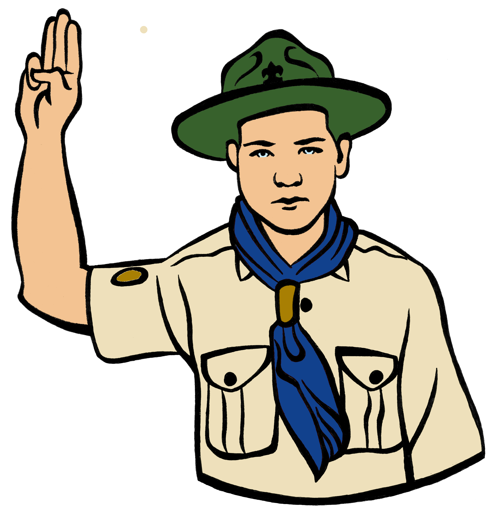
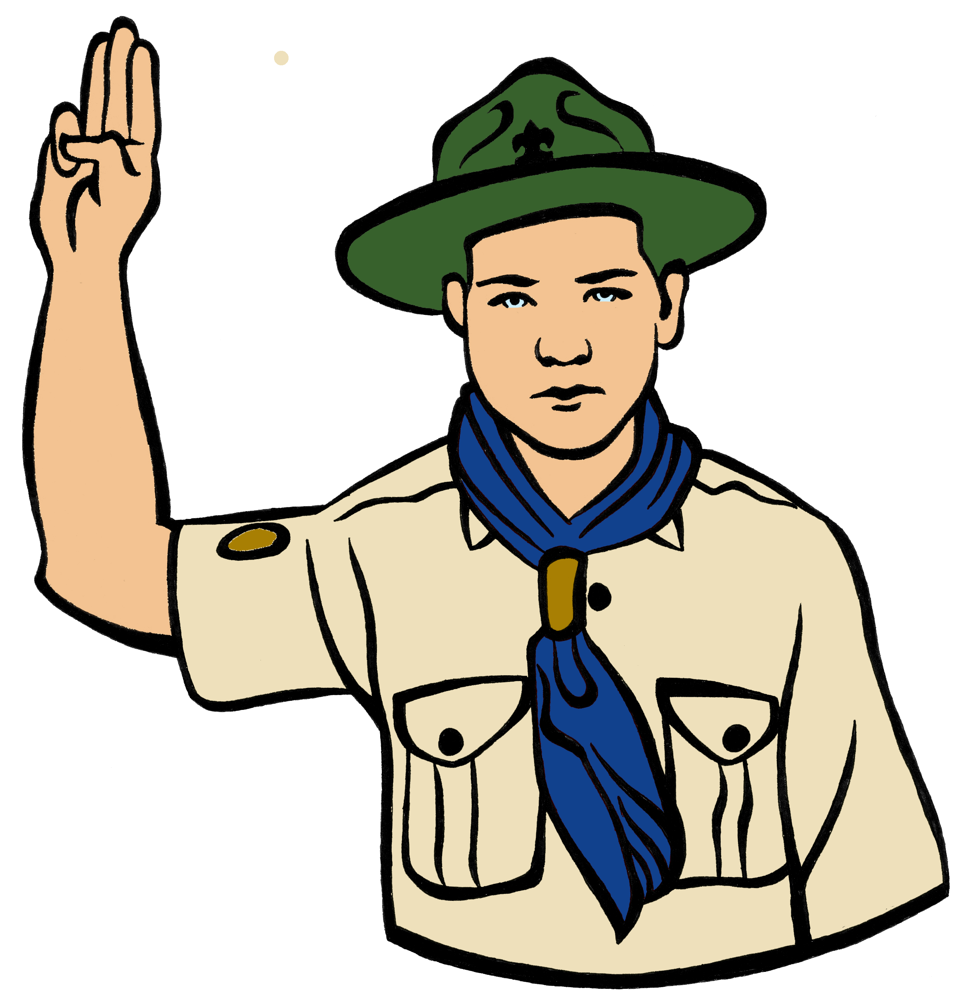

La Rama de Rangers comprende los cursos escolares de 1º, 2º y 3º de la ESO en el sistema educativo actual. Esto comprende las edades de 12, 13 y 14 años.
Los Rangers salen del mundo imaginario de Seeonee para explorar el mundo real, emulando a los grandes exploradores de la historia. Esta es la edad para el que fué concebido el Movimiento Scout. Esto quiere decir que los Rangers ya se guían por la Ley Scout y por los Principios Scouts.
Divididos por patrullas, los Rangers aduieren una mayor responsabilidad individual y de grupo, siendo los Rangers pieza fundamental para que sus propias actividades se lleven a cabo. Con el lema "Siempre listos", adquieren conciencia scout y la costumbre de realizar al menos una buena acción diaria.
La pañoleta de los Rangers será la que usen durante el resto de su etapa scout, es diferente a la de los lobatos siendo cuadrada. El nudo de la pañoleta pasa a ser el "nudo de la amistad". El saludo de los Rangers también cambia y será el que usen durante toda su vida scout: Se levanta la mano derecha a la altura de la cabeza con los dedos índice, corazón y anular extendidos y juntos. Esto simboliza los tres Principios Scouts (lealtad, pureza y abnegación). Además se dobla el dedo meñique sujetandolo con el pulgar, simbolizando que el fuerte protege al debil.
Los rumbos son la forma de progreso personal de los Rangers. Simbolizados con una rosa de los vientos, cada uno de los vientos (8 en total) representa un rumbo y un campo en el que mejorar. Los Ranger son independientes y ellos mismos elijen el campo en el que progresar y como desean hacerlo, siendo posteriormente evaluada la mejora por los responsables.
Quiero meter un párrafo más Quiero meter un párrafo más Quiero meter un párrafo más Quiero meter un párrafo más Quiero meter un párrafo más Quiero meter un párrafo más Quiero meter un párrafo más Quiero meter un párrafo más Quiero meter un párrafo más Quiero meter un párrafo más Quiero meter un párrafo más Quiero meter un párrafo más Quiero meter un párrafo más
 Cuaderno de Explorador
Cuaderno de Explorador